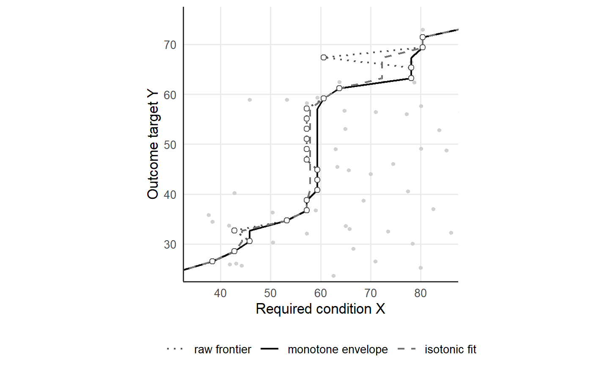

5 The monotone envelope
QNCA evaluates the frontier on an ordered grid of outcome targets y_1 < ... < y_m (Deja 2026b). For observed cases (X_i, Y_i), i = 1, ..., n, with condition X and outcome Y, the conditioning set at the target y_j is I_j = {i : Y_i >= y_j}, with k_j = |I_j| successful cases. At the tolerance pi in (0, 1], the raw frontier phi_pi(y_j) is the type-1 quantile at probability 1 - pi of the successful condition values, the order statistic of rank h_j = max(1, ceil(k_j (1 - pi))) (Deja 2026b).
A necessity boundary is non-decreasing in the target, and sampling discreteness can make adjacent raw values decrease (Deja 2026b). As the target rises, the conditioning set loses cases and the selected rank can fall, so the raw frontier at a higher target can land on a lower condition value than the raw frontier at the target before.
5.1 Nesting of the conditioning sets
The conditioning sets are nested. For l <= j, every case attaining y_j also attains y_l, so I_j is a subset of I_l, and a condition level required for the lower target y_l is also required for the higher target y_j (Deja 2026b). The index m* = max{j : k_j > 0} marks the highest target with a successful case. The monotone envelope applies the nesting: for j <= m*, the fitted value at y_j is the running maximum z_j = max{phi_pi(y_l) : 1 <= l <= j}, the smallest non-decreasing vector that lies on or above the raw frontier (Deja 2026b).
Under a fixed scope that extends above the largest observed outcome, the fitted frontier equals the scope bound x_max at every target above y_m*, and the fixed scope thereby counts the unobserved top band as empty under the CE-FDH convention. Between consecutive grid points the fitted frontier is the linear interpolant of the two endpoints, so the fitted frontier is non-decreasing and defined at every outcome level of the scope (Deja 2026b).
The envelope carries each requirement upward to every higher target. Every fitted value is an observed order statistic, so the fitted frontier stays on the condition scale (Deja 2026b). Monotone frontier estimators rest on the same construction: the free disposal hull is the lowest monotone boundary lying on or above the data (Deprins et al. 1984; Daouia and Ruiz-Gazen 2006). The envelope enforces the order restriction and leaves in place every raw value at least as large as all raw values at lower targets. The estimand remains the raw quantile necessity frontier, and the envelope is the shape restriction that enforces the order of the raw frontier (Groeneboom and Jongbloed 2014; Deja 2026b). The envelope neither smooths the frontier nor removes measurement noise (Deja 2026b).
5.2 Raw frontier, envelope and isotonic fit on one grid
The 200 cases of the synthetic dataset of the repository, with condition and outcome on a scale from 0 to 100, give the raw frontier at the tolerance pi = 0.90 on a grid of 50 targets under the fixed scope [0, 100]^2. The function qnca_resolution() returns, for each target, the conditioning-set size k, the selected rank, the raw value, the fitted value, the flag inherited, and the count below and the share exception_share of successful cases with a condition value below the fitted value. The argument monotone = "isotonic" returns the same account for the isotonic fit.
library(qnca)
d <- read.csv("https://raw.githubusercontent.com/MarekDejaUJ/qnca/main/data/qnca_dataset_n200.csv")
fixed <- c(0, 100, 0, 100)
env <- qnca_resolution(d$X, d$Y, pi = 0.90, scope = fixed)
iso <- qnca_resolution(d$X, d$Y, pi = 0.90, scope = fixed, monotone = "isotonic")
att <- env$k > 0
c(targets = nrow(env), attained = sum(att), decreases = sum(diff(env$raw[att]) < 0))
#> targets attained decreases
#> 50 46 3
raw_single <- sapply(env$y[att], function(y) qnca_frontier(d$X, d$Y, pi = 0.90, y_grid = y))
identical(raw_single, env$raw[att])
#> [1] TRUE
identical(monotone_envelope(env$raw[att]), env$fitted[att])
#> [1] TRUE
env$fitted[!att]
#> [1] 100 100 100 100Of the 50 targets, 46 have at least one successful case, and the raw frontier decreases at 3 steps between adjacent attained targets. A call of qnca_frontier() at one target at a time returns the raw value of the target, and monotone_envelope() applied to the raw frontier returns the fitted values; both calls of identical() return TRUE. At the 4 targets above the largest observed outcome the fitted frontier equals the scope bound 100.
fr <- rbind(
data.frame(y = env$y[att], x = env$raw[att], fit = "raw frontier"),
data.frame(y = env$y[att], x = env$fitted[att], fit = "monotone envelope"),
data.frame(y = iso$y[att], x = iso$fitted[att], fit = "isotonic fit")
)
fr$fit <- factor(fr$fit, levels = c("raw frontier", "monotone envelope", "isotonic fit"))
ggplot(fr, aes(x, y)) +
geom_point(data = d, aes(X, Y), colour = "grey82", size = 1) +
geom_path(aes(linetype = fit, colour = fit), linewidth = 0.7) +
geom_point(data = fr[fr$fit == "raw frontier", ], shape = 21, fill = "white",
colour = "grey35", size = 1.8) +
scale_linetype_manual(values = c("dotted", "solid", "dashed")) +
scale_colour_manual(values = c("grey35", "grey5", "grey45")) +
coord_equal(xlim = c(35, 85), ylim = c(25, 75)) +
labs(x = "Required condition X", y = "Outcome target Y", linetype = NULL, colour = NULL) +
theme(legend.position = "bottom")
Figure 5.1: Raw frontier (dotted line with open circles), monotone envelope (solid line) and isotonic fit (dashed line) at the tolerance pi = 0.90 for the 200 cases of the synthetic dataset (grey points), on a grid of 50 outcome targets under the fixed scope [0, 100]^2. The window shows condition values from 35 to 85 and outcome targets from 25 to 75, the range of the three decreases of the raw frontier.
5.3 Inherited targets
A target is inherited when the fitted value exceeds the raw value, so the requirement at the target comes from a lower target. The requirement at an inherited target repeats the evidence of a lower target, and a report marks a requirement inherited from a lower target as inherited (Deja 2026b).
inh <- env[env$inherited, c("y", "k", "rank", "raw", "fitted", "below", "exception_share")]
round(inh, 3)
#> y k rank raw fitted below exception_share
#> 17 32.653 48 5 42.790 45.855 5 0.104
#> 24 46.939 30 3 57.243 59.368 3 0.100
#> 25 48.980 29 3 57.243 59.368 3 0.103
#> 26 51.020 27 3 57.243 59.368 3 0.111
#> 27 53.061 26 3 57.243 59.368 3 0.115
#> 28 55.102 25 3 57.243 59.368 3 0.120
#> 29 57.143 21 3 57.243 59.368 3 0.143
#> 34 67.347 10 1 60.593 78.129 1 0.100
sum(inh$exception_share > 0.10)
#> [1] 6At pi = 0.90 the envelope inherits the requirement at 8 targets. At the target 32.653 the raw value 42.790 rises to 45.855. At the six targets from 46.939 to 57.143 the raw value 57.243 rises to 59.368. At the target 67.347 the raw value 60.593, the minimum of the 10 successful cases, rises to 78.129.
Inheritance has a cost. At an inherited target the share of successful cases below the fitted value can exceed 1 - pi when the exceptions admitted at a lower target concentrate among the cases attaining the higher target (Deja 2026b). In the synthetic data the share below the fitted value exceeds the exception tolerance 0.10 at 6 of the 8 inherited targets and reaches 0.143 at the target 57.143, where 3 of the 21 successful cases lie below the requirement 59.368.
5.4 The isotonic option
Least-squares isotonic projection, computed by the pool-adjacent-violators algorithm, is the standard alternative in order-restricted inference (Ayer et al. 1955; Best and Chakravarti 1990), and the argument monotone = "isotonic" selects the isotonic fit. The projection replaces each block of decreasing values by the mean of the block (Deja 2026b), so an isotonic fitted value can lie between two observed order statistics.
Near the top of the outcome range the conditioning set is small, the selected rank returns the minimum, and one efficient case lowers the raw value at every high target the efficient case attains. Pooling averages the low value into the resolved targets below the efficient case, so the efficient case lowers requirements that the tolerance already protects, whereas the envelope keeps the resolved requirements (Deja 2026b). In a sample with one appended efficient case, the added case leaves the raw pi = 0.95 value near y = 50 at 50.53; pooling moves the requirement at y = 50 to 22.80, and the envelope keeps the requirement at 50.53 (Deja 2026b).
differ <- which(abs(env$fitted - iso$fitted) > 1e-9)
round(data.frame(y = env$y, k = env$k, rank = env$rank, raw = env$raw,
envelope = env$fitted, isotonic = iso$fitted,
difference = env$fitted - iso$fitted)[differ, ], 3)
#> y k rank raw envelope isotonic difference
#> 16 30.612 52 6 45.855 45.855 44.323 1.532
#> 17 32.653 48 5 42.790 45.855 44.323 1.532
#> 21 40.816 35 4 59.368 59.368 57.951 1.417
#> 22 42.857 34 4 59.368 59.368 57.951 1.417
#> 23 44.898 32 4 59.368 59.368 57.951 1.417
#> 24 46.939 30 3 57.243 59.368 57.951 1.417
#> 25 48.980 29 3 57.243 59.368 57.951 1.417
#> 26 51.020 27 3 57.243 59.368 57.951 1.417
#> 27 53.061 26 3 57.243 59.368 57.951 1.417
#> 28 55.102 25 3 57.243 59.368 57.951 1.417
#> 29 57.143 21 3 57.243 59.368 57.951 1.417
#> 32 63.265 13 2 78.129 78.129 72.284 5.846
#> 33 65.306 11 2 78.129 78.129 72.284 5.846
#> 34 67.347 10 1 60.593 78.129 72.284 5.846
round(c(envelope = qnca(d$X, d$Y, pi = 0.90, B = 0, scope = fixed)$d_pi,
isotonic = qnca(d$X, d$Y, pi = 0.90, B = 0, scope = fixed,
monotone = "isotonic")$d_pi), 4)
#> envelope isotonic
#> 0.5916 0.5848
c(envelope = sum(env$fitted[att] %in% d$X), isotonic = sum(iso$fitted[att] %in% d$X))
#> envelope isotonic
#> 46 32The synthetic data show the same mechanism at the top of the outcome range. At the target 67.347 the 10 successful cases keep the rank at 1, and the raw value 60.593 is the condition value of one efficient case. At the targets 63.265 and 65.306 the rank 2 resolves the tolerance, and the raw value is 78.129. Pooling averages the three raw values to 72.284, so the efficient case lowers the two resolved requirements by 5.846, and the envelope keeps the requirement at 78.129. The effect size d_pi at pi = 0.90 is 0.5916 with the envelope and 0.5848 with the isotonic fit. All 46 fitted values of the envelope at attained targets are observed condition values, against 32 of the 46 isotonic fitted values.
5.5 The same call in Python and Julia
The Python package qnca and the Julia package QuantileNecessity return the same inherited targets, the same exception shares, the same largest gap between the envelope and the isotonic fit, and the same two effect sizes.
from urllib.request import urlopen
import numpy as np
from qnca import qnca, qnca_resolution
url = "https://raw.githubusercontent.com/MarekDejaUJ/qnca/main/data/qnca_dataset_n200.csv"
X, Y = np.loadtxt(urlopen(url), delimiter=",", skiprows=1, unpack=True)
fixed = (0.0, 100.0, 0.0, 100.0)
env = qnca_resolution(X, Y, pi=0.90, scope=fixed)
iso = qnca_resolution(X, Y, pi=0.90, scope=fixed, monotone="isotonic")
print(np.round(env.y[env.inherited], 3))
print(np.round(env.exception_share[env.inherited], 3))
print(round(float(np.max(np.abs(env.fitted - iso.fitted))), 3))
print(round(qnca(X, Y, pi=0.90, B=None, scope=fixed).d_pi, 4),
round(qnca(X, Y, pi=0.90, B=None, scope=fixed, monotone="isotonic").d_pi, 4))
#> [32.653 46.939 48.98 51.02 53.061 55.102 57.143 67.347]
#> [0.104 0.1 0.103 0.111 0.115 0.12 0.143 0.1 ]
#> 5.846
#> 0.5916 0.5848using QuantileNecessity, Downloads, DelimitedFiles
url = "https://raw.githubusercontent.com/MarekDejaUJ/qnca/main/data/qnca_dataset_n200.csv"
data = readdlm(Downloads.download(url), ',', Float64; skipstart = 1)
X, Y = data[:, 1], data[:, 2]
fixed = (0.0, 100.0, 0.0, 100.0)
env = qnca_resolution(X, Y; pi = 0.90, scope = fixed)
iso = qnca_resolution(X, Y; pi = 0.90, scope = fixed, monotone = :isotonic)
println(round.(env.y[env.inherited]; digits = 3))
println(round.(env.exception_share[env.inherited]; digits = 3))
println(round(maximum(abs.(env.fitted .- iso.fitted)); digits = 3))
println(round.([qnca(X, Y; pi = 0.90, B = 0, scope = fixed).d_pi,
qnca(X, Y; pi = 0.90, B = 0, scope = fixed, monotone = :isotonic).d_pi];
digits = 4))
#> [32.653, 46.939, 48.98, 51.02, 53.061, 55.102, 57.143, 67.347]
#> [0.104, 0.1, 0.103, 0.111, 0.115, 0.12, 0.143, 0.1]
#> 5.846
#> [0.5916, 0.5848]